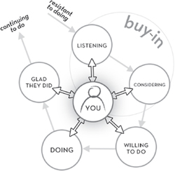

The Persuasion Cycle
The Persuasion CycleGood management is the art of making problems so interesting and their solutions so constructive that everyone wants to get to work and deal with them.
—PAUL HAWKEN, AUTHOR, NATURAL CAPITALISM
Right now, there’s someone in your life you need to reach. But you can’t, and it’s driving you crazy. Maybe it’s somebody at work: a subordinate, a team member, a client, your boss. Or maybe it’s somebody at home: a partner, a parent, a defiant teen, an angry “ex.”
You’ve tried everything—logic, persuasion, forcefulness, pleading, anger—but you’ve hit a wall every time. You’re mad, scared, or frustrated. And you’re thinking, “What now?”
Here’s what I want you to do: Think of this as a hostage situation. Why? Because you can’t get free. You’re trapped by another person’s resistance, fear, hostility, apathy, stubbornness, self-centeredness, or neediness—and by your own inability to take effective action.
And that’s where I come in.
I’m just an average guy—husband, father, doctor—but a long time ago, I discovered that I had a special talent. You could drop me into just about any situation, and I could reach people. I could persuade defiant executives, angry employees, or self-destructing management teams to work cooperatively toward solutions. I could get through to families in turmoil and to married couples who hated each other’s guts. I could even change the minds of hostage takers and desperate people contemplating suicide.
I wasn’t sure what I was doing differently from everybody else, but I could tell it worked. I knew I wasn’t smarter than everybody else, and I knew my success wasn’t just luck because what I did worked consistently, and it worked with all kinds of people in every type of situation. But why did it work?
In analyzing my methods, I found the answer. It turned out I’d happened on a simple, quick set of techniques—some I’d discovered on my own, and others I’d learned from mentors and colleagues—that create traction. That is, they pull people toward me, even if those people are trying to pull away.
To understand this, picture yourself driving up a steep hill. Your tires slip and slide and can’t grab hold. But downshift, and you get control. It’s like pulling the road to meet you.
Most people upshift when they want to get through to other people. They persuade. They encourage. They argue. They push. And in the process, they create resistance. When you use the techniques I offer, you’ll do exactly the opposite—you’ll listen, ask, mirror, and reflect back to people what you’ve heard. When you do, they will feel seen, understood, and felt—and that unexpected downshift will draw them to you.
The powerful techniques you’ll learn in this book can move people rapidly and easily, often within minutes, from “no” to “yes.” I employ them every day to fix broken families and help warring couples fall in love again. I use them to save companies on the brink of meltdown, get feuding managers to work together effectively, and empower salespeople to make “impossible” sales. And I use them to help FBI agents and hostage negotiators succeed in the toughest situations possible, when life and death are on the line.
In fact, as you’ll find out, you have a lot in common with hostage negotiators when it comes to reaching the people who don’t want to listen to you. That’s why this book starts with Frank’s story.
Frank is sitting in his car in a large mall parking lot, and nobody is coming near him because he’s holding a shotgun to his throat. The SWAT team and the hostage negotiation team are called in. The SWAT team takes positions behind other cars and vehicles, trying to not agitate the man.
As they wait, they fill in the background details. They’re looking at a man in his early thirties who lost his customer service job at a large electronics store six months earlier for yelling at customers and coworkers. He’d interviewed for several jobs, but didn’t get any of them. He was abusive verbally to his wife and two young children.
A month earlier, his wife and kids moved in with her parents in another city. She told him that she needed a break, and he needed to get his act together. The landlord of their apartment kicked him out at the same time because they hadn’t paid the rent. He moved into a shabby room in a poor section of the city. He stopped bathing and shaving and ate next to nothing. The last straw was the restraining order he’d received the day before he ended up at the mall parking lot.
Now the lead negotiator is talking calmly to the man. “Frank, this is Lieutenant Evans, I’m going to be talking with you, because there is another way out of this besides hurting yourself. I know you don’t think you have any choice, but you really do.”
Frank exclaims: “You don’t know s***. You’re just like everyone else. Leave me the f*** alone!”
Lieutenant Evans replies: “I don’t think I can do that. You’re here in the middle of a mall parking lot with a gun to your throat, and I need to help you find another way out of this situation.”
“Go f*** yourself! I don’t need anyone’s help!” Frank replies.
And so the conversation proceeds for an hour, with stretches of silence lasting several minutes or more. As the information about Frank comes in, it becomes clear that he’s not an evil person, just a very disturbed and angry one. The SWAT team is poised to “take him out” if he threatens anyone else with his gun, but everyone except Frank would like to end this peacefully. However, the odds of that don’t look so good.
After an hour and a half, another negotiator, Detective Kramer, arrives. Kramer is a graduate of one of the hostage negotiation training sessions I’ve delivered to police and FBI hostage negotiators.
Detective Kramer’s been briefed about Frank’s background and the status of this negotiation and offers Lieutenant Evans a different suggestion: “Here’s what I want you to say to the guy: ‘I’ll bet you feel that nobody knows what it’s like to have tried everything else and be stuck with this as your only way out, isn’t that true?’”
Evans replies, “Say what?”
Kramer repeats the suggestion: “Yeah, go on, say this to the guy: ‘I’ll bet you feel that nobody knows what it’s like to have tried everything else and be stuck with this as your only way out, isn’t that true?’”
Evans complies and when he says that to Frank, Frank too replies with: “Say what?”
Evans repeats it to Frank, who this time responds: “Yeah, you’re right, nobody knows and nobody gives a f***!”
Kramer tells Evans, “Good, you got a ‘Yes’; now you’re in. Let’s build on that.” He adds a second question for the lead negotiator to ask: “Yeah, and I’ll bet you feel that nobody knows what it’s like to start every day believing that there’s more chance that something will go wrong than go right, isn’t that true, too?”
To that, Frank replies: “Yeah, every f****** day! The same thing happens.”
Kramer tells Evans to repeat what he’s heard and get an additional confirmation: “And because nobody knows how bad it is and nobody cares and because nothing goes right and everything goes wrong, that’s why you’re in your car with a gun wanting to end it all. True?”
“True,” Frank replied, his voice showing the earliest signs of calming down.
“Tell me more. What exactly has happened to you? When was your life last okay, and what’s happened since then to turn it to crap?” Evans invites.
Frank starts to recount the events since he was fired from his job.
When he pauses, Evans responds with: “Really . . . tell me more.”
Frank continues describing the problems he’s had. At some point, with guidance from Kramer, Evans says: “And all of that’s caused you to feel angry? Or frustrated? Or discouraged? Or hopeless? Or what exactly?” Evans waits for Frank to pick the word that best fits how he feels.
Frank finally owns up to: “Fed up.”
Evans follows up with: “So you felt fed up and when you got that restraining order, that was the breaking point?”
“Yeah,” Frank confirms. His voice, once hostile, is quieter now.
In a few sentences, Frank’s gone from refusing to communicate to listening and beginning to have a conversation. What just happened? The most critical step in persuasion—the step I refer to as “buy-in”—has begun. That’s the step where a person goes from resisting to listening and then to considering what’s being said.
What caused Frank to start listening and begin to “buy in” to what Lieutenant Evans was saying? That shift was no accident. The secret lay in saying the words that Frank was thinking but not saying. When the lieutenant’s words matched what Frank was thinking, Frank leaned into the conversation and began to say, “Yes.”
The Persuasion CycleYou probably don’t find yourself in the types of situations that hostage negotiators handle. But on any given day, who are you trying to persuade to do something?
The answer is: nearly everybody you meet. Almost all communication is an effort to get through to people and cause them to do something different than they were doing before. Maybe you’re trying to sell them something. Maybe you’re trying to talk sense into them. Or maybe you need to impress them that you’re the right person for a job, a promotion, or a relationship.
But here’s the challenge: People have their own needs, desires, and agendas. They have secrets they’re hiding from you. And they’re stressed, busy, and often feeling like they’re in over their heads. To cope with their stress and insecurity, they throw up mental barricades that make it difficult to reach them even if they share your goals, and nearly impossible if they’re hostile.
Approach these people armed solely with reason and facts, or resort to arguing or encouraging or pleading, and you’ll expect to get through—but often you won’t. Instead, you’ll get smacked down, and you’ll never have a clue why. (How often have you walked away from a sales pitch, an office meeting, or an argument with your partner or child, shaking your head and saying, “What the heck just happened?”)
The good news is that you can get through, simply by changing your approach. The techniques I describe in this book work for hostage negotiators in the most desperate situations, and they’re equally potent if you’re trying to reach a boss, a coworker, a client, a lover, or even an angry teenager. They’re easy, they’re fast, and you can hit the ground running with them.
These techniques are powerful because they address the core of successful communication: what I call the “Persuasion Cycle” (see Figure 1-1). In developing the Persuasion Cycle, I was inspired by the ground-breaking work and ideas of James Prochaska and Carlo DiClemente in their Transtheoretical Model of Change and by William R. Miller and Stephen Rollnick in their creation of Motivational Interviewing.
All persuasion moves through the steps of this cycle. To take people from the beginning to the end of the Persuasion Cycle, you need to speak with them in a manner that moves them:
From resisting to listening
From listening to considering
From considering to willing to do
From willing to do to doing
From doing to glad they did and continuing to do.
The focus, central tenet, and promise of this book, “the secret of getting through to absolutely anyone,” is that you get through to people by having them “buy in.” “Buy-in” occurs when people move from “resisting” to “listening” to “considering” what you’re saying.
Ironically, the key to gaining “buy in” and then moving people through the rest of the cycle is not what you tell them, but what you get them to tell you— and what happens in their minds in the process
FIGURE 1-1 The Persuasion Cycle

In the following chapters, I’ll lay out nine basic rules and twelve quick techniques you can use to move people through different points on the Persuasion Cycle. Master these rules and techniques, and you can put them to work wherever you go in your career or personal life. They’re the same concepts I teach FBI agents and hostage negotiators for building empathy, de-escalating conflict, and gaining buy-in to a desired solution—and when you know them, you won’t need to be held hostage by another person’s anger, fear, lack of interest, or hidden agenda. That’s because you’ll have the tools you need to turn the situation to your advantage.
As you read this book, you’ll find multiple options for handling any situation. That’s because while we’re all similar in many ways, we each have our own way of doing things. The rules I outline in Section II are universal, but feel free to hand-pick the techniques in Sections III and IV that suit your personality and your life.
THE SECRET: GETTING THROUGH IS SIMPLEThere’s nothing magic about the approaches you’ll learn in these pages. In fact, one secret you’ll discover is that reaching people is easier than it looks. To illustrate that point, I’ll share the story of David, a CEO who used my techniques to turn his career around —and to save his family at the same time.
David was technically competent, but heavy handed and dictatorial. His CTO quit David’s firm, saying he loved the company but couldn’t handle the boss. Employees underperformed to retaliate for David’s abuse. Investors found him brusque and condescending, and they passed on the chance to invest in his company.
I was called in by the board to see if David could be rehabilitated. I had strong doubts when I met with him, but I knew I had to make the effort to reach him.
As David and I talked about his management style, I asked him on a whim, “How does your style play at home?”
He replied, “Funny you should ask that.” When I asked why, he responded, “I have a 15-year-old kid who’s bright but lazy, and nothing I try works with him. He gets bad report cards, and my wife just coddles him. I love my kid but I’m almost disgusted by him. We had him evaluated, and he’s got some kind of learning or attention problem. The teachers try to help him, but he just doesn’t follow through with any of their suggestions. I think he’s a good kid, but I just don’t know what to make of it.”
On a hunch, I taught David some quick communication techniques and told him to test them at work and at home. We scheduled a time to speak again a week later, but after just three days I received a message from him. It said: “Dr. Goulston, please give me a call at your earliest convenience. There’s something I’ve got to talk to you about.”
I thought to myself, “Oh God, what the heck happened?,” and called him back. I was surprised to hear the emotion in his voice when he answered.
“Doc,” he said, “I think you might have saved my life.”
“What happened?” I asked, and he replied, “I did exactly what you told me to.”
“With your board and people?” I asked. “How did. . . .”
He interrupted me. “No I haven’t spoken with them yet. It was with my son. I went home and went into his room and said I needed to talk to him. Then I said to him, ‘I’ll bet you feel that none of us know what it’s like to be told you’re smart and not be able to use your intelligence to perform well. Isn’t that so?’ And his eyes started to water—just as you predicted.”
David continued, “I followed up with the next question you suggested: ‘And I’ll bet sometimes you wish you weren’t so smart, so we wouldn’t have all these expectations of you and be on your case all the time about not trying harder, isn’t that true too?’ He started to cry . . . and my eyes began to water up. Then I asked him, ‘How bad does it get for you?’”
David went on in a choked voice, “He could hardly talk. He said, ‘It’s getting worse, and I don’t know how much more of it I can take. I’m disappointing everyone, all the time.’”
By this point, David told me, he was crying himself. “Why didn’t you tell me it was so bad?” he asked his son. David told me with pain in his voice what happened next: “My son stopped crying and looked back at me with the anger and resentment that he must have been feeling for years. And he said, ‘Because you didn’t want to know.’ And he was right.”
“What did you do next?” I asked.
“I couldn’t let him be alone in this.” David said. “So I told him, ‘We’re going to fix this. In the meantime I’m going to bring my laptop and work on your bed and keep you company when you’re doing your homework. I can’t let you be alone when you’re feeling so awful.’ We’ve been doing it each night now for a few days, and I think he and we are starting to turn a corner.”
He paused, and said, “You helped me dodge a bullet, doc. What can I do in return for you?”
I replied, “Do unto your company as you just did unto your son.”
“What do you mean?” he asked.
“You let your son exhale,” I said. “When you did, he told you what was really going on underneath—and to your credit you handled it superbly. You have a load of people—from board members to your management team—who view you exactly as your son did, and they also need to exhale about their frustration with you.”
David set up two meetings, one with his board and one with his executive team. He said the same thing to each group. He started off sternly: “I’ve got to tell you that I’m really very disappointed”—at which point both groups steeled themselves, preparing to take a tongue lashing—”I’m very disappointed in how I’ve jumped on all of you and then have been closed off to input from all of you, when you’ve steadfastly been trying to protect this company and me from me. I didn’t want to listen, but I’m listening now.”
David went on to share the story of his son. He concluded his remarks by saying, “I’m asking you to give me a second chance, because I think we can fix this. If you’ll give me your input one more time, I’ll listen and with your help find a way to implement your ideas.”
His board and his management team not only decided to give him a second chance, they gave him a standing ovation.
What’s the moral of this story? That the right words have tremendous power to heal. In David’s case, a few hundred words saved his job, his company, and his relationship with his son.
But there’s a second lesson here. Look at the two stories in this chapter, and you’ll see that Detective Kramer and David used some of the same approaches to achieve very different goals. Detective Kramer kept a troubled man from killing himself, while David kept his company from firing him and mended the fractures in his family. The power of these techniques, and the others you’ll learn, lies in the fact that they apply to nearly any person and any situation.
Why does a single set of communication tools have such universal power? Because while our lives and our problems are very different, our brains work in similar ways. In the next chapter, we’ll take a very quick look at why our minds “buy-in” or “buy-out”— and why reaching an unreachable person depends on talking to the brain.